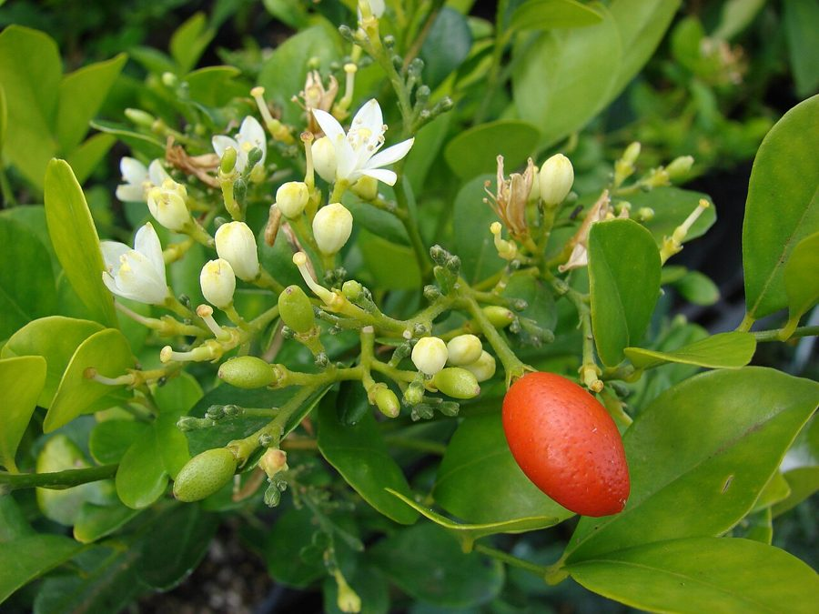

कामिनीOrange Jasmine
Murraya paniculata · Rutaceae · FLR-0303

- Scientific name वैज्ञानिक नाम
- Murraya paniculata (L.) Jack
- Family कुल
- Rutaceae
- Hindi हिंदी
- कामिनी
- Local names स्थानीय नाम
- kamini, kaamini, orange jasmine, murraya
- Status here यहाँ की स्थिति
- cultivated
- Movement आवागमन
- Resident, here all year
- Known from कहाँ दर्ज
- Others have published records from the Basti–Ayodhya districts बस्ती–अयोध्या के ज़िलों से दूसरों के प्रकाशित अभिलेख
- IUCN IUCN
- not evaluated
- Review समीक्षा
- audited and independently read
When to look कब देखें
Present all year. साल भर मौजूद।
Uses and possibilities उपयोग और संभावनाएँ
Drawn from the documented uses in the profile below, where each is labelled traditional, current or a research lead. All uses →
Tell it apart from इनसे अलग पहचानें
कामिनी / Orange Jasmine
Murraya paniculata (L.) Jack — Rutaceae
कामिनी — एक सदाबहार झाड़ी जो बाग़ों, घरों, मंदिरों और पार्कों में लगाई जाती है। यह एशिया से भारत में लाई गई है। पत्तियाँ छोटी, हरी, सुगंधित होती हैं। फूल बहुत छोटे, सफ़ेद, पाँच पंखुड़ियों वाले, घने गुच्छों में, और अत्यंत सुगंधित होते हैं। फूल साल भर आते हैं, विशेषकर गर्मी और बरसात के बाद। फूलों की गंध रात को ज्यादा तीव्र होती है। यह एक पारंपरिक बाग़ की झाड़ी है, जिसे सदियों से भारतीय बाग़ों में उगाया जा रहा है।
Quick Identification त्वरित पहचान
| Feature | Description |
|---|---|
| Size | Small evergreen shrub, 1–3 m tall, dense and compact |
| Leaves | Small, alternate, elliptic, 2–5 cm, glossy, aromatic when crushed |
| Flowers | Small, white, five petals, 1–1.5 cm diameter, highly fragrant |
| Flower arrangement | In terminal and axillary cymes (clusters) |
| Fruit | Small red berry, oval, about 1 cm, containing 1–2 seeds |
| Bark | Pale brownish, smooth |
| The test | Tiny glossy leaves and profusely-produced small fragrant white flowers identify it |
Field tip: In gardens and homesteads, look for a small, densely-branched evergreen shrub with tiny glossy leaves and numerous small, highly fragrant white flowers. The flowers are produced year-round but are most abundant after rains. The fragrance is strongest at night.
हिंदी — कैसे पहचानें: छोटी, घनी झाड़ी। छोटी, चमकदार, सुगंधित पत्तियाँ। बहुत छोटे, सफ़ेद, सुगंधित फूल घने गुच्छों में। रात को गंध ज्यादा।
Morphology आकारिकी
Biometrics (cultivated shrubs in Indian gardens):
| Measurement | Range |
|---|---|
| Height | 1–3 m |
| Spread | 1–2.5 m |
| Leaf length | 2–5 cm |
| Leaf width | 1–2 cm |
| Flower diameter | 1–1.5 cm |
| Berry diameter | 0.8–1 cm |
Stem and branches: Slender, much-branched, pale brownish, becoming woody. Wood is moderately hard.
Leaves: Alternate, elliptic to oblong-elliptic, 2–5 cm long, 1–2 cm wide. Margin entire. Glossy green, semi-translucent. Aromatic when crushed, releasing a pleasant citrus-like scent. Petiole very short, 2–3 mm.
Flowers: Small, about 1–1.5 cm diameter, white, with five petals. Stamens 10, shorter than the petals. Highly fragrant, with a jasmine-like or orange-blossom perfume. Flowers in terminal and axillary cymes (clusters of 10–30 flowers per inflorescence). Produced year-round, with peaks during and after monsoon.
Fruit: A small, oval, red or orange berry, about 8–10 mm long, containing 1–2 seeds. Berries persist on the shrub for weeks.
हिंदी: पत्तियाँ छोटी, अंडाकार, चमकदार, सुगंधित। फूल बहुत छोटे, सफ़ेद, सुगंधित। फल छोटे, लाल या नारंगी, गोल।
Behaviour & Ecology व्यवहार और पारिस्थितिकी
Orange Jasmine is an evergreen shrub introduced from Southeast Asia, widely cultivated in Indian gardens and homesteads. It is a slow-growing, compact shrub suitable for hedges and formal gardens. The year-round flowering is a major attraction. The fragrant flowers are visited by bees, butterflies, and moths. The red berries are eaten by birds, which helps disperse seeds. The shrub is relatively pest-resistant and low-maintenance.
हिंदी: दक्षिण-पूर्व एशिया से लाया गया। धीरे-धीरे बढ़ता है। साल भर फूल खिलते हैं। छोटे, सुगंधित, सफ़ेद फूलों के लिए प्रसिद्ध।
Life Cycle / Phenology जीवन चक्र
| Month / season | Event |
|---|---|
| Year-round | Vegetative growth and flowering |
| April–May | Pre-monsoon flowering peak |
| June–September | Continued flowering during monsoon |
| October–March | Flowering continues; cooler season |
| 2–3 years from seed | First flowering |
Seedlings germinate readily from bird-dispersed seeds. Growth is slow but steady. Lifespan reaches 30–50 years in gardens.
हिंदी: साल भर फूल खिलते हैं। अप्रैल-मई में पहली बहार। बरसात में भी फूल। सर्दियों में भी खुशबू।
Associated Species / Interactions संबंधित प्रजातियाँ
- Pollinator visitors: Asian Honey Bee, butterflies, and moths on flowers.
- Seed dispersal: Birds eat the red berries and disperse seeds.
Pests and Diseases कीट और रोग
- Leaf-eating insects; rarely cause serious damage.
- Scale insects may occasionally infest the shrub.
- No significant fungal diseases under normal garden conditions.
- Relatively pest-resistant compared to many ornamentals.
Agricultural / Human Relevance कृषि प्रासंगिकता
Traditional and cultural use:
- Ornamental. Orange Jasmine is one of the most popular ornamental shrubs in Indian gardens, valued for its evergreen foliage, year-round flowers, and fragrance.
- Sacred use. Flowers are used in temples and for worship, though less commonly than some other species.
- Hedge and border. The compact growth and small leaves make it ideal for formal hedges and borders.
- Fragrance. The flowers produce one of the most characteristic and pleasant of garden fragrances, particularly strong at night.
Today. Widely grown in gardens, parks, temple grounds, and institutional gardens throughout India. One of the most common ornamental shrubs.
हिंदी: बाग़ों में सबसे आम झाड़ियों में से एक है। सुगंधित फूलों के लिए प्रसिद्ध है। बाड़ और किनारों के लिए उपयोग किया जाता है। पूजा में भी फूलों का प्रयोग होता है।
Expected Locally स्थानीय रूप से अपेक्षित
Not a field record. Written from published accounts for eastern Uttar Pradesh. No confirmed local sighting yet — if you have seen it, that is what the atlas needs.
अभी तक स्थानीय पुष्टि नहीं। यह विवरण प्रकाशित स्रोतों से है, किसी अवलोकन से नहीं।
GBIF holds published records from homesteads and gardens across Uttar Pradesh. Orange Jasmine is found in private gardens, temple grounds, parks, and homesteads throughout eastern Uttar Pradesh. It is one of the most common ornamental shrubs in the region.
Distribution वितरण
Global range: Native to Southeast Asia (Thailand, Cambodia, Laos, and Malaysia). Cultivated in tropical and warm subtropical regions worldwide.
In India: Common in gardens and parks throughout the country, from sea level up to about 1,500 m elevation.
In Uttar Pradesh: Very common in all districts, in gardens, homes, temples, and parks.
In Basti district / eastern UP: Very common in towns and villages; present in most gardens and temple grounds.
Research Questions शोध प्रश्न
- How many Orange Jasmine shrubs are planted in your town or village, and where are they located? / आपके गाँव-कस्बे में कितनी कामिनी की झाड़ियाँ हैं? — Map all locations where the shrub is grown.
- When does the flowering peak in your area, and is it consistent year to year? — Record flowering frequency and intensity monthly for 1–2 years.
- What is the relationship between nighttime fragrance intensity and insect visitation? — Compare fragrance strength and insect visits at different times.
- Which bird species eat the red berries, and how are seeds dispersed? — Observe shrubs; track seed predation and germination.
- Can Orange Jasmine be propagated from cuttings, and what is the success rate under local conditions? — Conduct propagation trials; document success rates with different rooting media.
Similar Species मिलती-जुलती प्रजातियाँ
| Species | How to tell apart | हिंदी |
|---|---|---|
| Night Jasmine (Cestrum nocturnum) | Slightly larger leaves; whitish small flowers; black berries; different family | बड़ी पत्तियाँ; सफ़ेद छोटे फूल; काली बेरियाँ |
| White Aak (Calotropis gigantea) | Much larger leaves and flowers; milky latex; waxy pink flowers | बहुत बड़ी पत्तियाँ; गुलाबी फूल; लेटेक्स |
| Cestrum (Cestrum spp.) | Different leaf arrangement; longer flowers; different family | विभिन्न पत्तियाँ; लंबे फूल |
Field rule: A small, compact, evergreen shrub with tiny glossy aromatic leaves and profusely-produced small white highly-fragrant flowers is Orange Jasmine.
Taxonomy & Classification वर्गीकरण
Original description. Originally described as Chalcas paniculata by Linnaeus (1753) based on specimens from Southeast Asia. Later transferred to Murraya by Jack (1820). Type locality is Southeast Asia (Thailand/Malaysia region).
Subspecies. Monotypic — no subspecies are currently recognised, though garden cultivars exist.
Family and order placement. Order Sapindales, family Rutaceae (the citrus family, including Curry Leaf and other aromatic plants). The genus Murraya contains about 10 species of tropical Asian shrubs and trees.
Phylogenetic notes. Murraya paniculata is closely related to other Rutaceae genera such as Citrus, sharing the aromatic foliage and fragrant flowers characteristic of the family.
IUCN status rationale. Not evaluated. Widespread in cultivation; not threatened in native habitat.
Photo Gallery फोटो गैलरी
No photos yet — add field photos to media/species/orange_jasmine/ and run node scripts/sync_photos.js.
Wanted photos:
- Small shrub in garden or home setting
- Tiny glossy aromatic leaves
- Small white flowers in terminal clusters
- Flowers in close-up showing fragrance expression
- Red berries on shrub
- Shrub used as hedge or border
- Flowers in evening when fragrance peaks
References संदर्भ
- Linnaeus, C. (1753). Species Plantarum. Laurentius Salvius, Holmiae. Vol. 2. [as Chalcas paniculata]
- Jack, W. (1820). Malayan Miscellanies. Penang.
- Hooker, J.D. (1875). The Flora of British India. Vol. 1. L. Reeve & Co., London.
- Duthie, J.F. (1903). Flora of the Upper Gangetic Plain and of the Adjacent Siwalik and Sub-Himalayan Tracts. Vol. 1. Government Printing, Calcutta.
- Sahni, K.C. (1998). The Book of Indian Trees. Oxford University Press, New Delhi.
- GBIF Occurrence Data — Murraya paniculata, India.
Source file: species/flora/shrubs/orange_jasmine.md